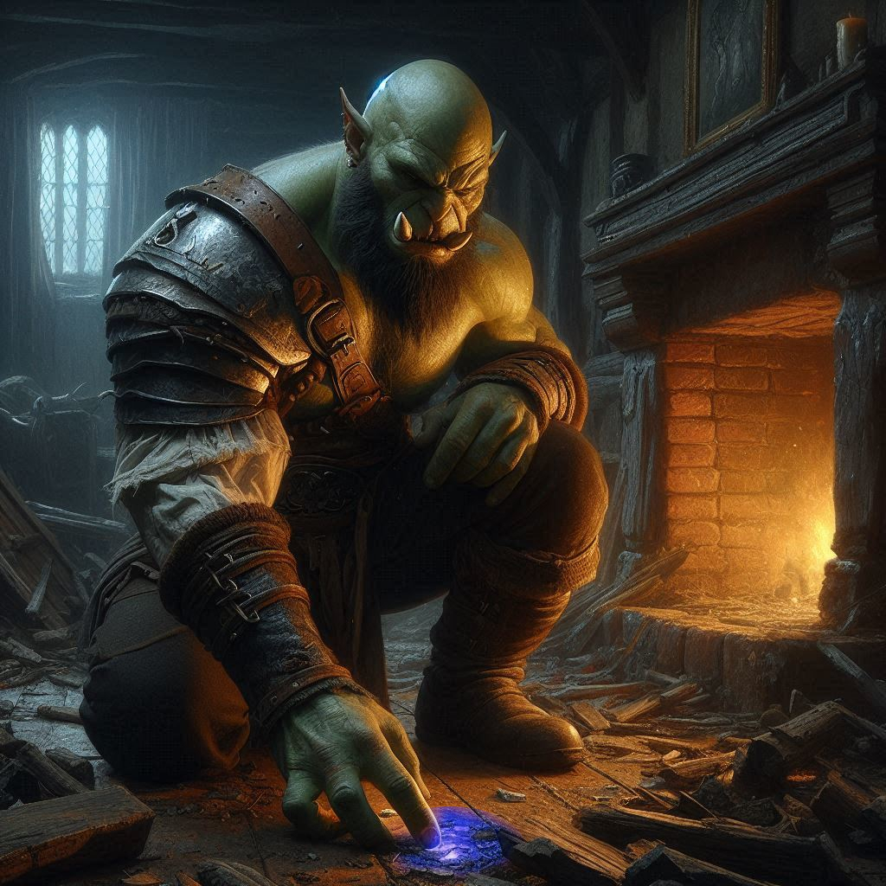
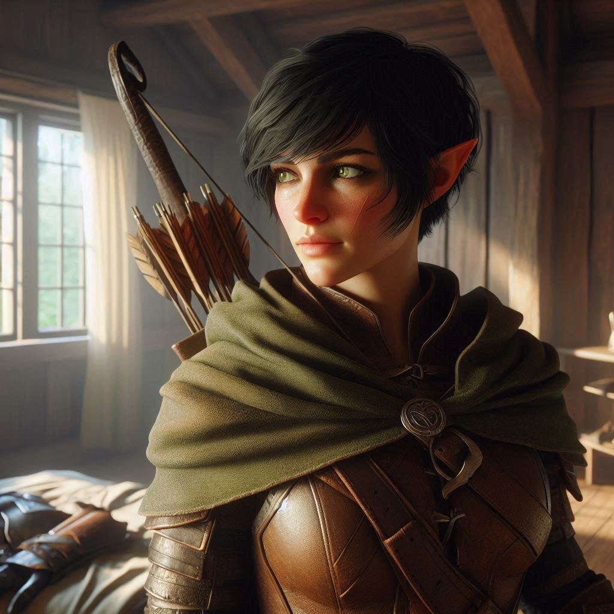

The Rune Stone
You stand beside Baider in the dimly lit Ranger’s Guild House, the air thick with tension. Elias leans against the stone hearth, his expression grim. The three of you have been here for hours, piecing together the mystery surrounding the Trade Ministry attack and the abduction of Onyx. Your mind races with everything that’s happened—Belladonna under siege, Onyx gone, and Varis lurking behind it all, weaving a web of dark magic and deceit. You can feel the weight of your mission like a stone in your chest.
Baider’s rough voice cuts through the silence. “We don’t have much time,” he says, his gaze shifting from Elias to you. His half-orc frame seems larger in the flickering firelight, his eyes sharp with purpose. “If Varis has Onyx, we know where he’s taking him. Hemlock Caverns.”
You nod, the name sending a chill down your spine. Hemlock Caverns—the place where Jorsh disappeared. The same place where dark magic is rumored to thrive, where shadows and secrets linger in the depths. The mere thought of it sets your heart racing, but it’s Baider’s next words that truly catch you off guard.
“He’s going to sacrifice him to Yaldaboath,” Baider continues, his voice low and cold. “The demon overlord of the Shadow Realm.”
The words hang in the air like a curse. You glance at Elias, his jaw clenched as he processes the gravity of the situation. You know you can trust him, but there’s a flicker of doubt. He doesn’t know the full story, the history you share with Jorsh or the darkness Hemlock Caverns holds for you. But there’s no time to dwell on the past. Onyx needs you. Belladonna needs you.
“We need to figure out what Onyx was doing before he was taken,” Elias says, breaking the silence. His voice is steady, but you can hear the tension in it. “There has to be something in his cottage. A clue, a sign… something.”
You nod, knowing he’s right. Without another word, the three of you leave the Guild House and make your way through the village streets. The night is eerily quiet, the aftermath of the attack still heavy in the air. Your boots crunch on the dirt path as you approach Onyx’s cottage, tucked away on the edge of Belladonna’s outskirts.
The door to the small stone house hangs ajar, splintered from the attack. Inside, the place is in shambles—books scattered, shelves overturned, and furniture broken. You take a deep breath, steeling yourself for what’s to come.
“Over here,” Baider says, motioning to a corner of the room. You follow him, your eyes falling on a glowing object amidst the chaos. A small, intricately carved stone, pulsing with faint blue light.
Baider kneels beside it, his hand hovering over the stone as if he’s hesitant to touch it. “A rune stone,” he murmurs. “We found this in Hemlock Caverns, years ago.”
You crouch beside him, curiosity and dread mingling in your chest. The rune stone hums with a strange energy, the runes etched into its surface flickering like flames. “What does it mean?” you ask, your voice barely above a whisper.
Baider’s face is grim as he explains. “It’s a key,” he says. “We didn’t know it at the time, but this stone… it can open paths. Gates to the Shadow Realm… places better left forgotten.” He pauses, glancing up at you. “I’d bet my forge that Varis wants to use this stone or one like it to unlock the portal to the Shadow Realm. And he’s going to sacrifice Onyx to do it.”
Your heart tightens at the thought. Onyx, the wise dwarf who has guided your village for years, is in unimaginable danger. And Varis is the one pulling the strings. You grit your teeth, anger burning in your chest. “We have to stop him,” you say, standing up, your hand tightening around the hilt of your sword. “We can’t let Varis open that portal.”
Baider rises beside you, his massive form towering over the wreckage of the cottage. “There’s only one way to stop him,” he says. “We go to Hemlock Caverns. We cut him off before he can finish the ritual.”
Elias steps forward, his eyes full of determination. “We need to be smart about this,” he says. “Hemlock Caverns are full of dangers. Dark magic, hidden traps. We don’t know what we’re walking into. Can we use the rune stone to bypass Hemlock Caverns and teleport directly to the Shadow Realm?”
“The only way to invoke that kind of power is at the Temple of Astaroth,” Baider grunts with a dismissive shake of his massive head.
“The abandoned orc temple?” you ask. “That’s closer than Hemlock Caverns. It could save us some time.”
“Might cost us our souls though,” Baider murmurs.
You look between them, the weight of the decision pressing down on you. Hemlock Caverns is a place of nightmares, but it’s where Varis is heading. And yet, another possibility stirs in your mind—a long-forgotten orc temple, rumored to hold its own dark magic. Baider had mentioned it once, an abandoned place deep in the mountains that could also serve as a route to the Shadow Realm. Perhaps there’s another way to stop Varis, to beat him to his goal without charging headfirst into Hemlock Caverns.
You take a deep breath, weighing your options. This choice could change everything.